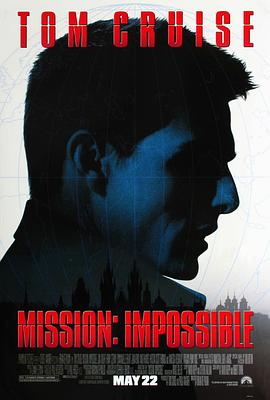

碟中谍 / Mission: Impossible
又名：职业特工队(港) / 不可能的任务(台) / M:I
与谍影重重比似乎有点不恰当，但是最近看了谍影重重就自然想比较一下。作为悬疑片，紧张气氛一直是我最热衷的，这部节奏轻松了些。不知是不是和上世纪的拍摄技法有关呢？
作品信息
| 导演 | 布莱恩·德·帕尔玛 |
| 编剧 | 大卫·凯普 / 罗伯特·汤 / 斯蒂文·泽里安 / 布鲁斯·盖勒 |
| 主演 | 汤姆·克鲁斯 / 乔恩·沃伊特 / 艾曼纽·贝阿 / 亨利·科泽尼 / 让·雷诺 / 文·瑞姆斯 / 克里斯汀·斯科特·托马斯 / 瓦妮莎·雷德格雷夫 / 茵格保加·达坤耐特 / 瓦伦蒂娜·雅库尼亚 / 马雷克·瓦苏特 / Nathan Osgood / 约翰·麦克劳克林 / 罗尔夫·萨克森 / 卡雷尔·多布雷 / 安德雷斯·魏斯涅夫斯基 / Gaston Subert / 里科·罗斯 / Bob Friend / 安娜贝尔·穆利恩 / 加里克·哈根 / Jirina Trebická / 山姆·道格拉斯 / 奥莱加·费多罗 / 大卫·施奈德 / 海伦·林赛 / 兰德尔·保罗 / 迈克尔·罗杰斯 / 劳拉·布鲁克 / 梅丽莎·纳奇布尔 / 扬·卡拉米特鲁 / 代尔·戴 / 马塞尔·尤勒斯 / 基思·坎贝尔 / 艾米利奥·艾斯特维兹 / 哈里·弗雷德尔 / 约翰·诺尔 |
| 类型 | 动作 / 惊悚 / 冒险 |
| 制片国家/地区 | 美国 |
| 语言 | 英语 / 捷克语 / 乌克兰语 / 法语 |
| 上映日期 | 1996-05-22(美国) |
| 片长 | 110 分钟 |
| IMDb | tt0117060 |
最后一次看到是 2026-08-01T11:07:27+10:00 · 豆瓣原页